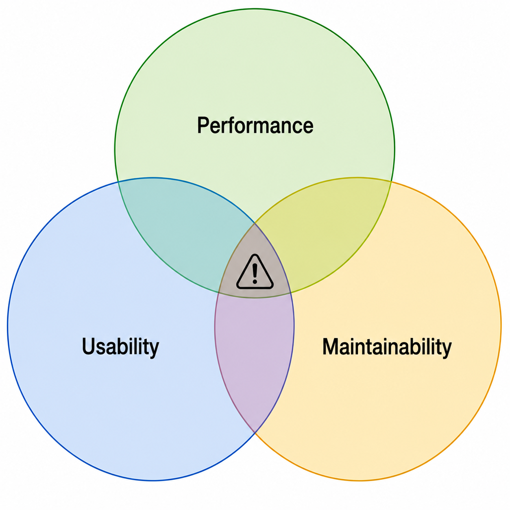
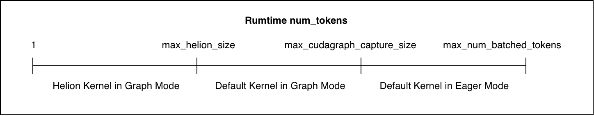
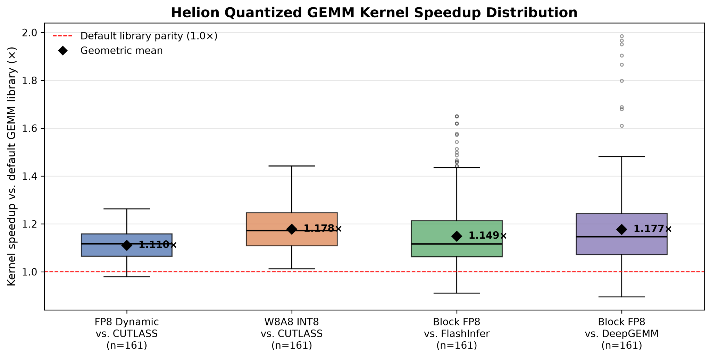
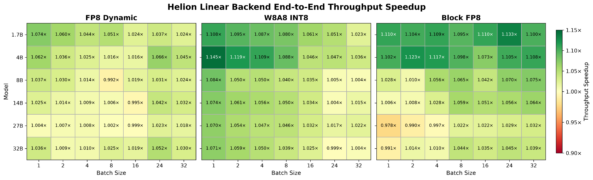

vLLM的量化linear backend长期靠CUTLASS、DeepGEMM、FlashInfer的手写kernel。PyTorch官方博客的新工作把Helion接了进来：用一份高层DSL实现，通过autotuning自动打出超过这些手写库的性能。
关键数字在Hopper上：三种8-bit量化格式的kernel几何平均加速1.11到1.18倍，端到端serving持续增益、部分负载超10%。下面拆实现、调优与评估。
把Helion接进vLLM的linear backend，验证高层kernel DSL能否在降低kernel实现复杂度的同时提升LLM推理性能。一个Helion GEMM实现覆盖多种算法变体：标准GEMM、Split-K、Swap-AB，最优变体与配置由per-shape autotuning自动选。
Hopper上，Helion linear backend用per-shape tuning加混合调度，全面超过vLLM默认的CUTLASS与DeepGEMM backend，端到端持续增益，部分负载吞吐提升超10%。
vLLM是LLM高性能推理serving框架。对FP8、INT8、INT4、NVFP4等量化linear层，vLLM提供专用linear backend，集成CUTLASS、DeepGEMM、FlashInfer等库的硬件优化kernel实现，按量化格式与硬件平台选用。
Helion是PyTorch原生的硬件无关kernel DSL，用tile programming模型写高性能kernel。高层抽象让开发者用简洁的Pythonic代码表达一次，Helion为不同负载、不同硬件生成特化代码。不用手工为每个workload硬件特化，靠AOT autotuner在大搜索空间里系统性探索（底层内存布局、kernel调度到高层算法选择），选最优配置。高层抽象加系统性autotuning，让一份kernel实现横跨多负载多硬件。还支持LLM引导搜索进一步提调优效率。
机会有四条。性能：之前的工作证明Helion在多负载多硬件的推理kernel上做到SOTA。系统性调优框架：相对"生成、profile、改"的开放式agent路线，Helion把调优变成定义良好的数值优化问题，更稳健可靠，不依赖profile引导搜索，调优效率仍有竞争力；LLM引导搜索把LLM推理与数值优化结合。可移植与抽象：一份实现，多负载多硬件优化。客户端kernel优化：推理引擎默认kernel按通用负载调，Helion让用户为自己的部署继续调，不需要专家级kernel功底。
挑战也有四条。AOT调优开销：细粒度调优仍可能数小时，开销来自调优策略的粒度而非Helion本身；别的DSL做到同等workload特化只会更贵。启动开销：vLLM启动时CUDA Graph capture触发Helion JIT编译，冷启动变慢；warm start靠缓存编译产物基本消除。推理运行时开销：CUDA Graph覆盖范围外，Helion kernel dispatch/launch的CPU开销可能吃掉调优收益；实践中Helion最适合跑在CUDA Graphs下。维护开销：给流行模型发预调优配置是持续的上游维护负担，大配置文件难维护、CI没法穷举验证。
细粒度调优的三方权衡：性能、易用性、可维护性。这不是Helion特有，而是workload特化kernel优化的内禀：三者往往只能取其二。

性能越高，配置调得越细：要么客户端autotuning开销上去，要么维护者上游多发预调优配置。目标是为目标场景找到平衡点。
给vLLM加Helion linear backend，聚焦Hopper与Helion Triton backend。Hopper高效推理的主力量化格式是FP8与INT8，目标是量化GEMM：FP8_Dynamic（FP8 per-token激活 + per-channel权重缩放）；W8A8_INT8（INT8 per-token激活 + per-channel权重缩放）；Block_FP8（FP8，1×128激活缩放 + 128×128权重缩放）。Helion CuteDSL backend在Blackwell上的初步结果已有竞争力，CuteDSL成熟后可扩展到Blackwell。
特定输入形状下，几种GEMM算法变体能提速：Split-K，把K维切给多个thread block，M/N太小时加并行；Swap-AB，把A@B写成 (B.T@A.T).T，小M形状下tiling更友好、GPU利用率更高。
传统做法：kernel作者实现多个GEMM变体，逐个benchmark，跟标准GEMM比，再手写启发式按输入形状调度。比如vLLM现在的Block_FP8 backend在Hopper上M<32 切 Swap-AB。启发式通用场景好用，但对每个模型/负载未必最优。
Helion下，一份统一GEMM实现覆盖全部三种变体（Standard、Split-K、Swap-AB）：不用实现多个kernel、不用手写调度启发式，算法选择暴露成可调参数，AOT autotuner为每个workload自动选最优变体加底层kernel配置。
下面用基础matmul kernel示意思路，实际的量化GEMM kernel结构相同，只是多了量化与缩放逻辑。
def matmul(
out: torch.Tensor, # [M, N]
a: torch.Tensor, # [M, K]
b: torch.Tensor, # [K, N]
) -> None:
M, K = a.shape
N = b.shape[1]
hl.specialize(K)
hl.specialize(N)
out_dtype = out.dtype
acc_dtype = torch.float32
split_k = hl.register_tunable(
"split_k", PowerOfTwoFragment(1, 256)
)
k_block_size = helion.next_power_of_2(helion.cdiv(K, split_k))
if split_k > 1:
out.zero_()
swap_ab = hl.register_tunable(
"swap_ab", BooleanFragment()
)
for tile_m, tile_n, outer_k in hl.tile(
[M, N, K],
block_size=[None, None, k_block_size]
):
acc = hl.zeros([tile_m, tile_n], acc_dtype)
acc_t = acc.t()
for tile_k in hl.tile(outer_k.begin, outer_k.end):
if swap_ab:
a_blk = hl.load(a, [tile_m.index[None, :], tile_k.index[:, None]])
b_blk = hl.load(b, [tile_k.index[None, :], tile_n.index[:, None]])
acc_t = hl.dot(
b_blk,
a_blk,
acc=acc_t,
out_dtype=acc_dtype,
)
else:
acc = hl.dot(
a[tile_m, tile_k],
b[tile_k, tile_n],
acc=acc,
out_dtype=acc_dtype,
)
if swap_ab:
out_blk = acc_t.t().to(out_dtype)
else:
out_blk = acc.to(out_dtype)
if split_k == 1:
out[tile_m, tile_n] = out_blk
else:
hl.atomic_add(out, [tile_m, tile_n], out_blk)两个算法选择都暴露成可调参数：split_k约束为2的幂、最大256；swap_ab是布尔参数。autotuner在约束搜索空间里探索组合、benchmark，为每个workload选最优变体。
按运行时num_tokens与CUDA Graph覆盖做混合调度：max_helion_size以内的小形状，CUDA Graph replay下走Helion；更大的形状回退默认kernel（CUTLASS/DeepGEMM）。

三个实际好处：消掉Helion运行时开销（只在CUDA Graph replay里跑，避开dispatch/launch的CPU开销）；降低调优开销（细粒度调优只覆盖decode主导的小num_tokens区间，需调优的形状数大减，端到端收益机会保留）；降低配置维护开销（配置集小，预调优配置更易验证、发布、维护）。
HELION_AUTOTUNER=LLMSeededLFBOTreeSearch \
HELION_BENCHMARK_CUDAGRAPH=1 \
python scripts/autotune_helion_kernels.py \
--kernels scaled_mm block_scaled_mm \
--autotune-effort "full"Per-shape配置调优：要跟CUTLASS/DeepGEMM/FlashInfer拼，Helion dispatch区间内的每个输入形状单独调。max_helion_size取32；vLLM为这些num_tokens值capture CUDA Graphs：[1, 2, 4] + range(8, 256, 8) + range(256, max_graph_size+1, 16)；落到Helion区间的就是 [1, 2, 4, 8, 16, 24, 32]，每个值按模型实际GEMM形状单独调。
调优benchmark开CUDA Graph：Helion kernel只在CUDA Graph下用，开着Graph测，autotuner评估的配置更接近真实推理。Helion用HELION_BENCHMARK_CUDAGRAPH环境变量开关，这里打开。
LLM引导搜索：配置用LLMSeededLFBOTreeSearch生成，LLM先挑一批有潜力的候选做种子，再跑LFBOTreeSearch，这里用Claude Opus 4.8。从高质量候选起步，autotuner更容易找到好配置，也可能缩短总调优时间。
kernel层与端到端serving两层评估，模型覆盖Qwen3-1.7B/4B/8B/14B/32B，加最新的Qwen3.8-27B看新架构。每个模型测Hopper上三种常用8-bit量化：Qwen3.8-27B用AzatAI/Qwen3.8-27B-FP8-dynamic（FP8_Dynamic）、Freaksterz/Qwen3.8-27B-SmoothQuant-W8A8-INT8（W8A8_INT8）、Qwen/Qwen3.8-27B-FP8（Block_FP8）。全部benchmark跑在NVIDIA H100 80GB HBM3上。
先孤立测Helion量化GEMM kernel，看细粒度调优本身的收益，不掺推理栈其他部分。对照是Hopper上默认vLLM linear backend的对应kernel：FP8_Dynamic对CUTLASS，W8A8_INT8对CUTLASS，Block_FP8对FlashInfer/DeepGEMM。

几何平均加速：FP8_Dynamic对CUTLASS 1.110倍，W8A8_INT8对CUTLASS 1.178倍，Block_FP8对FlashInfer 1.149倍、对DeepGEMM 1.177倍。分布显示各输入形状差异大，说明细粒度调优的价值，而不是靠单一配置或通用调度启发式。
Server启动命令如下，关键选项：--max-num-seqs 32对应Helion混合调度阈值，评估聚焦batch不超过32的区间；--no-enable-prefix-caching关prefix caching避免干扰；--linear-backend helion开Helion backend，不加则用默认。
vllm serve \
--model "$MODEL" \
--max-num-seqs 32 \
--tensor-parallel-size 1 \
--no-enable-prefix-caching \
--linear-backend helionBenchmark命令如下，每个workload默认与Helion两种backend都测。Hopper上默认backend基线：FP8_Dynamic用CutlassFP8ScaledMMLinearKernel，W8A8_INT8用CutlassInt8ScaledMMLinearKernel，Block_FP8用FlashInferFp8DeepGEMMDynamicBlockScaledKernel。
vllm bench serve \
--backend vllm \
--model "${MODEL}" \
--endpoint /v1/completions \
--dataset-name sharegpt \
--dataset-path "${DATASET}" \
--max-concurrency "${BATCH_SIZE}" \
--num-warmups "${NUM_WARMUPS}" \
--num-prompts "${PROMPTS}" \
--ignore-eos
总体：各模型各量化格式持续端到端增益，部分负载吞吐提升超10%。
这个Helion linear backend已在作者的vLLM fork里可用于生产，fork里带autotuning工具链与文档，用户可为更多模型/负载生成优化配置。上游合入剩一个挑战：预调优配置集的发布与验证维护开销。
对GEMM这类延迟关键kernel，探索中的模式是：Helion kernel与集成框架上游维护，带默认配置过功能测试与CI；workload特化的autotuning交给终端用户。同一套自动化工具链让用户在部署前为目标模型硬件生成优化配置。这个模式用易用性换性能与可维护性；对延迟关键kernel，离线优化一次的投入产出比划算，尤其对愿意在投产前投入的serving厂商。
细粒度调优不是唯一的落地策略。对量化、激活、归一化这类小辅助kernel，可以拿一点峰值性能换小得多的配置集（跨形状通用）。初步实验显示6个配置就能拿到有意义的提升，这是另一条上游合入路径，调优与维护开销小得多。
欢迎试用当前实现，到vLLM Helion linear backend RFC反馈真实部署经验，指导后续集成。
硬件覆盖：Helion团队继续扩backend支持，包括Blackwell的CuteDSL backend、AMD GPU与TPU的性能工作；backend成熟后把Helion linear backend扩展过去重测。
模型覆盖：这里主要打dense模型（linear backend占推理延迟大头）；MoE模型上MoE backend更重要，正在做Helion MoE backend，把kernel优化能力带过去。
参考：https://pytorch.org/blog/building-a-high-performance-and-portable-vllm-linear-backend-with-helion/